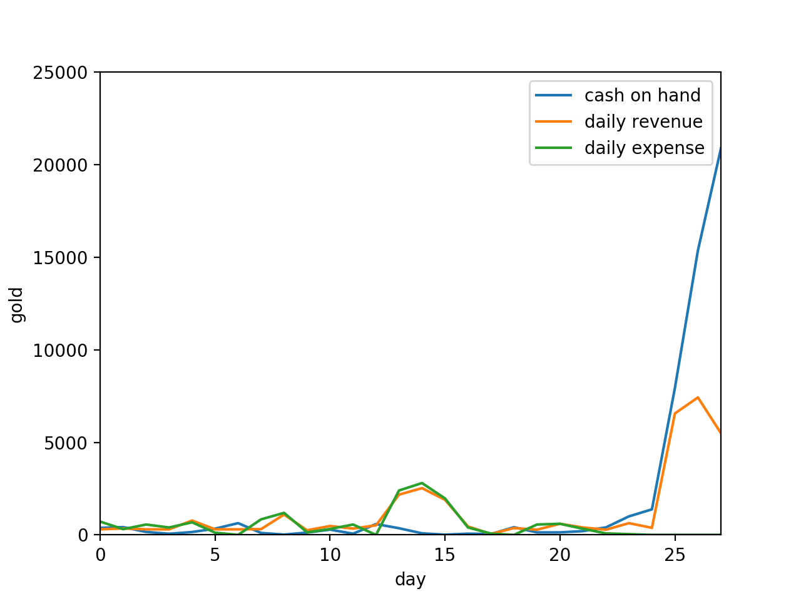

Optimizing crop planting with mixed integer linear programming in Stardew Valley
Abstract
TL;DR: plant your crops like this and you will make the most money possible
Motivation
If you haven’t yet tried, consider escaping 2020’s cyberpunk hellscape into the 2D world of Stardew Valley, an open-world farming RPG where almost all actions lead to positive outcomes. The game is as non-punishing as they come, making it a superb unwinding after a long day or recurring date with your long-distance quarantined non-gaming significant other. Whether you spend your time watering blueberries, reeling in trout, or romancing the local townsfolk, most would say there is no wrong way to play as long as you’re having fun.
I disagree. A farm is a business and businesses should make as much money as possible by any means necessary [1]. Since farming provides the majority of a Stardew farmer’s income, it is therefore necessary to determine the rotation of crops which maximizes profit within the constraints of energy and available capital. If your fun is not optimized, you’re wasting valuable time.
Background
You arrive on your late grandfather’s farm with little more than a hoe [2] and a watering can. The mayor welcomes you with 15 parsnip seeds and you inherit 500 gold pieces. To plant a seed, you must first till the ground with your hoe, expending 2 of your 270 daily energy. For another 2 energy you then water the seeds that and every subsequent $t$ days until they are harvested. Harvesting takes no energy, so you should quickly pick your produce, sell it over at Pierre’s General Store and immediately buy more seeds, rinse, and repeat. Each season consists of 28 days, after which all crops die and cannot be harvested.
Additionally, you can forage materials at no monetary cost by cutting down trees and selling the wood and byproducts to Robin, the carpenter. Trees on average contain about 50g worth of materials and take 30 energy to harvest. Unlike crops there is no growing period and we will assume an infinite number of available trees [3].
In order to maximize profit, in general you should plant a lot of seeds, but not so many seeds that you cannot water them all in a single day, and also spend your excess energy foraging. One such algorithm could be:
- On each of day $d$ where $d \% t = 0$ plant as many crops as energy or budget will allow
- Spend all excess energy foraging
Assuming we only plant parsnips, our farming and foraging strategy should look like this:
Benchmark farming and foraging strategy with number of crops presently in the ground shown on the Y axis.
As you can see, at first, crop planting is capital-limited. However, after one planting cycle, it becomes energy-limited at 67 parsnips, which requires just under 270 energy. In order to compensate for the planting energy, every harvest day foraging drops to 0.
Though straightforward to execute, this strategy suffers from several inefficiencies:
- Other crops are not utilized. Variety is the spice of life.
- Crops could be planted between harvest cycles, more efficiently utilizing available energy and capital. As they say, let your money work for you.
- Crops planted in the last cycle are not harvested, so the investment therein is wasted.
Benchmark planting algorithm profit & loss
It appears that an industrious but simple farmer can achieve on the order of 9735g in the first season. For the record, this would be enough gold to buy you about 2.5 goats.
Methods
But what would the mathematically inclined farmer do? As it turns out, this problem can be rearranged in to a mixed integer linear program (MIP), a type of linear program where some (in this case all) of the variables are integers. MIPs are NP-hard, but but we can still achieve optimal or good enough results with off-the-shelf solvers like CBC [4].
In order to solve a linear program, we must format our problem standard form, defining our constraints and cost function. In plain English, we want to:
- Never plant any seeds we don’t have
- Never expend more than 270 energy per day
- Never fall below 0g cash on hand
Let us define our selection matrix $$ X = \begin{bmatrix} x_{0,0} & \cdots & x_{0,n} \\ \vdots & \ddots & \vdots \\ x_{m,0} & \cdots & x_{m,n} \end{bmatrix} \quad$$ Where $x_{i,j}$ is the number of crop $i$ planted on day $j$. $$i \in [0, 27]$$ $$j \in [jazz, cauliflower, garlic, green bean, kale, parsnip, potato, tulip, foraging]$$ Each crop has several attributes associated with it, namely the price at which we buy seeds is $$b = [b_0 \cdots b_n]$$ The price at which we sell crops is $$s = [s_0 \cdots s_n]$$ The number of days a crop must grow before harvesting $$t = [t_0 \cdots t_n]$$ The energy used in planting a crop $$p = [p_0 \cdots p_n]$$ The energy used in watering a crop $$w = [w_0 \cdots w_n]$$ The number of days it takes a crop to regrow once harvested $$r = [r_0 \cdots r_n]$$ Note that only green beans regrow, so $$r_j = \begin{cases} 3, & \text{if}\ j = \text{green beans} \\ \infty, & \text{otherwise} \end{cases}$$ Furthermore, foraging must be treated as a crop which is harvested instantly but requires 30 energy to plant $$t_\text{foraging} = 0$$ $$p_j = \begin{cases} 30, & \text{if}\ j = \text{foraging} \\ 2, & \text{otherwise} \end{cases}$$ Given these parameters, we are trying to optimize profit, $$\text{Maximize } \sum X(s-b)^T$$ However, in order to avoid counting crops that would reach maturity after the season ends we must multiply our result element-wise by the timing relevancy matrix $$T^* = \begin{bmatrix} T_{0,0} & \cdots & T_{0,n} \\ \vdots & \ddots & \vdots \\ T_{m,0} & \cdots & T_{m,n} \end{bmatrix} \quad$$ where $$T^*_{i,j} = \begin{cases} 0, & \text{if}\ 27 \leq i+T_j \\ 2, & \text{otherwise} \end{cases}$$ Applying this to the profit expression, we have $$\text{Maximize } \sum (T^* \circ X) (s-b)^T$$ We must also derive our constraints. Firstly, we cannot conjure seeds and sell them back to Pierre $$X \geq 0$$ Second, we cannot spend more than 270 energy in a single day. Since the daily energy expenditure is a function of both the crops planted that day and all crops still growing from previous days, we have our planting relevancy matrices $$P^*_k = \begin{bmatrix} P_{0,0} & \cdots & P_{0,n} \\ \vdots & \ddots & \vdots \\ P_{m,0} & \cdots & P_{m,n} \end{bmatrix} \quad$$ Where $$P^*_{k,i,j} = \begin{cases} p_j, & \text{if}\ k=i \\ 0, & \text{otherwise} \end{cases}$$ And our watering relevancy matrices $$W^*_k = \begin{bmatrix} W_{0,0} & \cdots & W_{0,n} \\ \vdots & \ddots & \vdots \\ W_{m,0} & \cdots & W_{m,n} \end{bmatrix} \quad$$ Where $$W^*_{k,i,j} = \begin{cases} w_j, & \text{if }\ i \leq k \text{ and } ((i+t_j \geq k) \text{ or } (r_j \neq \infty )) \\ 0, & \text{otherwise} \end{cases}$$ Which is to say that the the crop requires $w_j$ water on day $k$ only if the crop was planted before day $k$ and if either it still has not been harvested or it regrows. Collectively, this gives us the constraints $$\sum (W^*_k + P^*_k) \circ X \leq 270 \quad \forall \quad k \in [0, 27]$$ Where $\sum$ takes the sum of all elements in the matrix
Third, we must construct our buying and selling relevancy matrices, respectively, since the available budget is the sum of all previous purchases, expenses, and the starting capital. Since there is a lag between buying seeds and selling mature produce, these matrices are in effect time shifted from each other according to the $t$ vector. The buying relevancy matrices are $$B^*_k = \begin{bmatrix} B_{0,0} & \cdots & B_{0,n} \\ \vdots & \ddots & \vdots\\ B_{m,0} & \cdots & B_{m,n} \end{bmatrix} \quad$$ Where $$B^*_{k,i,j} = \begin{cases} b_j, & \text{if }\ i \leq k\\ 0, & \text{otherwise} \end{cases}$$ And our selling relevancy matrices $$S^*_k = \begin{bmatrix} S_{0,0} & \cdots & S_{0,n} \\ \vdots & \ddots & \vdots\\ S_{m,0} & \cdots & S_{m,n} \end{bmatrix} \quad$$ Where $$S^*_{k,i,j} = \begin{cases} s_j(1 + (k-i-t_j) // r_j), & \text{if }\ i+t_j \leq k\\ 0, & \text{otherwise} \end{cases}$$ Where $//$ indicates floor division. This is because recurring crops get sold an additional time every $t_j$ days after day $i$. We can use the buying and selling relevance matrices to construct our final constraints: $$\sum (S^*_k-B^*_k) \circ X+500 \geq 0 \quad \forall \quad k \in [0,27]$$ But wait! We forgot about Mayor Lewis’s fifteen parsnip seeds! We must edit our initial constraint $$X \geq 0$$ To be $$X \geq A$$ Where $$A_{i,j} = \begin{cases} 15, & \text{if }\ i=0 \text{ and } j=parsnips\\ 0, & \text{otherwise} \end{cases}$$ And we adjust our budget constraint to reflect the additional 300g worth of parsnip seeds we have to “buy”. $$\sum (S^*_k-B^*_k) \circ X+800 \geq 0 \quad \forall \quad k \in [0,27]$$ Therefore, our final problem in standard form is $$\text{Maximize } \sum (T^* \circ X) (s-b)^T$$ Subject to $$X \geq A$$ $$\sum (W^*_k + P^*_k) \circ X \leq 270 \quad \forall \quad k \in [0, 27]$$ $$\sum (S^*_k-B^*_k) \circ X+800 \geq 0 \quad \forall \quad k \in [0,27]$$ I coded this all up in Python using the CVXPY library and the CBC solver. You can check it out on github.
Results
When you run all the numbers, you end up with this:
Optimal planting strategy
Optimal profit & loss
Discussion
The results agree with conventional Stardew wisdom. We begin by planting our 15 turnips and doing a lot of foraging while still cash-limited. This gives us the necessary cashflow to plant our first round of green beans as soon possible, since their regrowth property makes them the most profitable crop in the long run, assuming they are planted at the start of the season. We also plant a few cauliflower. Around day 4 the strategy gets interesting. At day 4 we plant a batch of garlic, followed immediately by a batch of kale as soon as the garlic matures. Once done planting the kale we switch back to garlic. The logic to this madness is to maximize the number of cauliflower planted on day 14, just in time to be harvestable on day 27. The late-spring cauliflower bonanza somewhat simplifies the second half of the season, which resembles the first half in that it consists of one batch of garlic, followed by a larger batch of kale overlapping a second batch of garlic. Finally at the end of the season with no time to harvest anything we briefly return to foraging as a somewhat profitable energy sink. Now that’s what I call crop rotation!
Unlike in the benchmarking case, we almost never have cash on hand until the end of the season. All profits are immediately reinvested in crops. The algorithm’s obsession with cauliflower like some sort of vegan baker makes sense given that cauliflower has by far the greatest sell:buy ratio at 2.19, while jazz flowers have a ratio of 1.6, and so aren’t planted at all. Parsnips also never get planted once our initial gift runs out, which makes sense given their low expense ratio of 1.75. Thanks for nothing Mayor Lewis.
Our net profit in the optimized case is 20,865g, a full 2.14x the baseline case! Now you too can work your farmer to the bone on an industrial cauliflower plantation. You might not have made any friends in town while you slaved away in the field, but you’ve probably earned the respect of Jojomart’s shareholders.
These results were solved to within 2% of optimal becuase I don't have the time nor budget for anything better than that. Trying to run the solver with tighter tolerance simply would not converge in a reasonable time frame. If you want to donate some server time to this noble science, suggest a similar project, or hire me, send me an email.
Footnotes
- I don’t actually believe this
- Not your significant other
- Time is also an important resource in Stardew Valley, but optimal pathing can typically eliminate the importance of this constraint. It is generally possible, though stressful, to cut down a number of trees, harvest all your crops, sell the wood to Robin, sell the crops to Pierre, buy your next round of seeds, till, plant, and water, in that order, before any shops close or the sun goes down.
- I could not get the default CVXPY MIP solver, GLPK_MI to solve this problem.